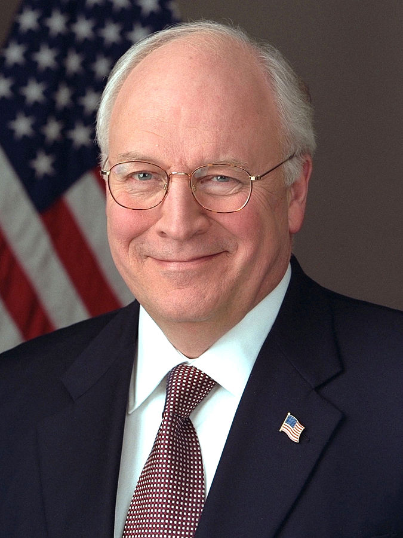
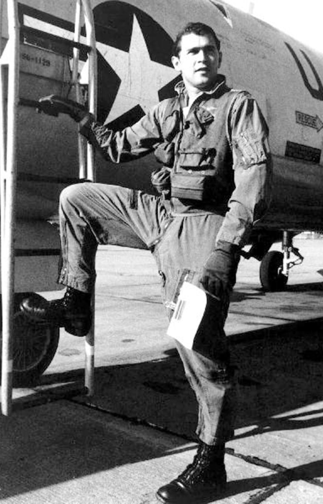
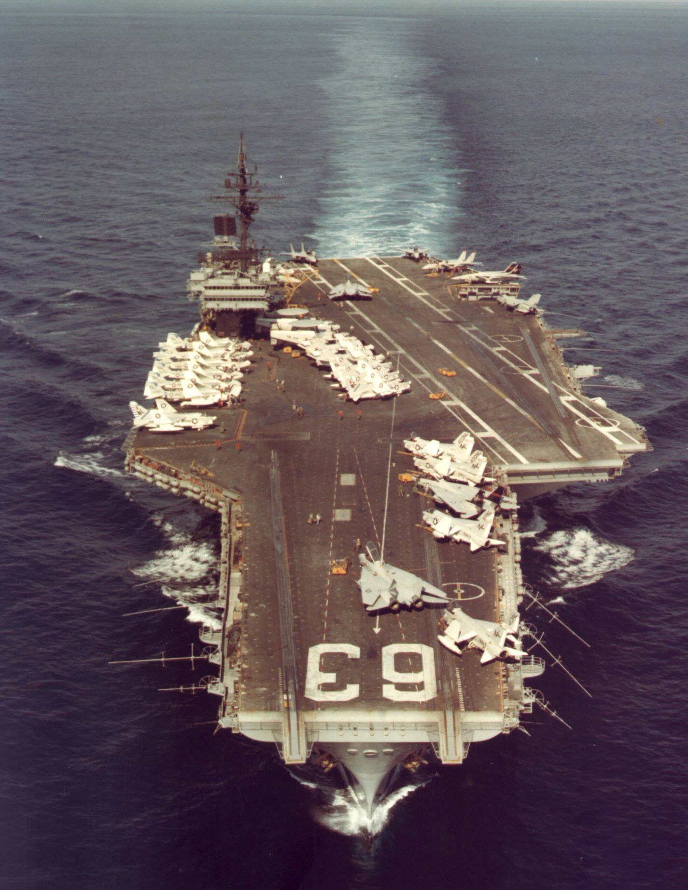
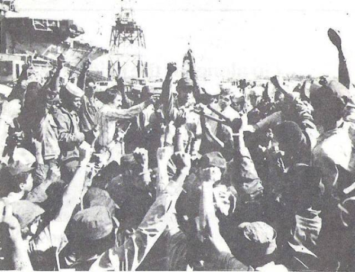
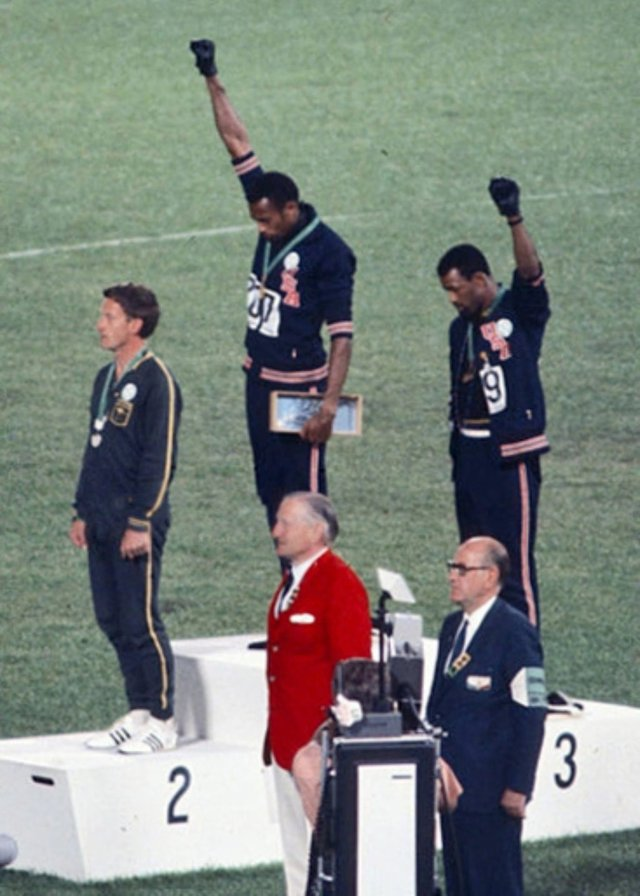

미해군 항공모함의 1972년 인종 폭동 이야기
게시: 2021-12-16T06:30:48+09:00
<미국 젊은이들은 징병을 두려워하지 않는가> 우리가 아는 것과는 달리, 미국도 여전히 '남성' 시민들은 국방의 의무를 지고 있으며 실은 미국 시민권자 뿐만 아니라 불법 이민자를 포함한 모든 이민자들도 18세 생일 되는 30일 이내에 Selective Service System (SSS, aka "The Draft")에 등록을 할 것을 법으로 요구 받음. 여기에 등록된다고 다 군대 간다는 소리는 아니고 '필요시' 국가가 거기 등록된 사람을 징병할 수 있다는 이야기. 베트남 전쟁 기간 동안 최소 50만명의 젊은이들이 이런저런 방법으로 병역을 회피(draft avoidance)하거나 기피(draft evasion/dodgoing). 대표적인 회피/기피 방법은... 1. 종교적 이유에 의한 양심적 병역기피 : 목사 및 전도사 등은 모두 병역 면제. 공화당 정치인 밋 롬니도 몰몬교 선교사로 베트남 대신 프랑스에서 2년을 보냄. 2. 결혼 및 출산 : 부양할 아이가 있는 청년은 징집 순위가 확 떨어짐. 아이를 많이 낳는 것은 당시 미국에게도 좋은 일이라서, 결혼을 하기만 해도 (아이를 낳을 기회니까) 징집 순위를 많이 낮춰 주었음. 3. 동성애 : 당시 동성애에 대한 사회적 편견이 어마무시한 때라서, 오직 병역 기피를 위해 동성애자 행세를 하는 것은 쉽지 않았음. 그러나 동성애자들은 혹시 신체검사 할 때 군의관이 눈치 못 챌까봐 여성용 팬티를 입고 신체검사에 응했다고. 4. 대학 : 대학에 재학 중인 학생은 학기별로 징집을 연기해줌. 이런 식으로 빌 클린턴도 1회 연기, 현 중국 대통령 조 바이든(Zhou Biden)은 5회 연기, 미국 우파의 영웅 딕 체니도 5회 연기 받음. 근데 대학 성적이 낙제 점수면 징집 연기가 안 됨. 스티븐 킹의 스릴러 소설 Hearts in Atlantis에서는 기숙사에서 hearts라는 카드 게임에 빠져 낙제점수를 받을 위기에 처하자 베트남에 끌려가지 않기 위해 성적을 올리려는 눈물나는 노력이 묘사됨. 5. 기술이 쵝오 : 국가 산업 특히 방위 산업에 핵심적인 기술을 가지고 그런 업종에 종사하는 사람들은 징집에서 제외.

** 이라크 전쟁을 사실상 억지로 일으켜 많은 나라들의 많은 젊은이들을 죽게 만든 장본인 딕 체니는 처음에는 대학생이라는 이유로 베트남전에서 빠졌고, 졸업 후에 징집 대상이 되자 결혼했다는 이유로 빠졌으며, 나중에 징집 대상이 모자라 기혼자도 징집하려 하자 때마침 태어난 맏딸 덕분에 징집에서 면제됨.
6. 자원 입대 :
징집을 피하려고 자원 입대를 한다? 농담이 아님. 베트남 전쟁 중 Hershey 장군이 미의회에서 증언한 바에 따르면 1명을 징집할 때마다 3~4명이 비전투 병과로 자원 입대하는 효과가 있었다고. 실제로 통계에 따르면 베트남 전쟁 기간 중 징집 대상자 11명 중 4명 정도가 전투 현장에 투입되지 않을 병과로 자원 입대. 가장 대표적인 인물이 딕 체니의 바지 사장 George W. Bush 대통령. 그는 1968년 텍사스 주방위군 조종사로 자원 입대. 당시 하원 의원이었던 아빠 빽으로 점수가 낮았는데도 조종사가 될 수 있었다고. 아무튼 덕분에 베트남 전쟁에는 가지 않았음.

** 부시든 체니든 병역 문제에 있어 법에 저촉되는 점이 1도 없음. 그리고 남들 다 싫어하는 명분 없는 전쟁에 끌려가기 싫은 것은 누구나 마찬가지. 다만 그러면서 남의 집 아들들을 총알받이로 내몰아 실제로 많이 죽게 만든 것은... 최소한 피의 복수를 외치거나 전쟁을 하자고 주장하는 사람들은 그냥 자기들끼리 전쟁에 나갔으면 좋겠음.
<왜 항공모함에는 흑인이 없었을까> WW1 때만 해도 흑인들을 군에 징집하는 것은 흑인들 손에 총을 쥐여주는 위험천만한 짓이라는 인식이 강했고, 백인 병사들이 흑인들과 함께 싸운다는 것은 상상할 수도 없는 만행. WW2 때도 대부분의 흑인들은 취사병 등 백인들이 기피하는 노가다성 임무에만 배치되었으며, 베트남 전쟁에 와서야 비로소 흑백 병사들이 하나의 부대에서 섞여 임무를 수행. 그런데 특히 베트남 전쟁에 와서는 '대체 우리가 뭘 위해서 이런 낯선 땅에서 싸워야 하느냐'는 회의감 때문에 젊은이들의 병역 기피가 심했음. 약 50만명이 병역을 합법, 불법적으로 기피했는데, 베트남에 끌려가서 개죽음 하고 싶지 않았지만 이도 저도 할 수 없었던 젊은이들이 택한 최후의 수단은... 뜻밖에도 (어쩌면 당연히) 해군 및 공군 입대. 실제 전투에 투입되어 베트콩 손에 죽을 확률이 크게 떨어졌기 때문. 그런데 다들 이렇게 해군이나 공군에 입대하려고 기를 쓰다보니 군에 입대할 때 보는 시험(정식명칭 Armed Services Vocational Aptitude Battery)에서 높은 점수를 받는 사람이 공군 및 해군을 싹쓸이. 당시의 흑백 차별 사회에서 흑인들은 학교 교육이 상대적으로 열악하다 보니, 베트남 전쟁 기간 중에 공군 및 해군은 모조리 백인 병사들로 채워짐. 흑인은 진짜 극소수. 그런데 1971년 베트남전에서 발을 빼려는 닉슨 대통령이 징집을 줄이면서 징병제를 대거 모병제로 단계별 전환하자, 이제 군에 끌려가지 않아도 되겠다고 생각한 백인 청년들이 해군 및 공군에 지원하지 않게 됨. 그러면서 흑인들도 비로소 해공군에 입대할 기회가 생김. 당장 1972년이 되자 해군 신병의 20%가 흑인으로 채워짐. 그러면서 당장 부작용이 생겨 1972년, 북베트남 동해안에서 작전 중이던 USS Kitty Hawk(사진1)에서는 차별대우에 분노한 흑인 수병들이 일으킨 USS Kitty Hawk riot이 발생. 당시 키티호크의 흑인 비중은 6%.

전해지는 바에 따르면 키티호크 인종 폭동의 계기는 한 18살짜리 흑인 수병이 식당에서 샌드위치 2개를 가져가려 하자 백인 취사병이 1개만 가져가라고 했고, 흑인 수병이 그를 무시하고 손을 뻗어 1개 더 가져가려고 한 것에서 시작. 수시간에 걸친 폭력 행위로 인해 여러 명이 다쳤고 (대부분 백인), 향후 수행된 조사 및 군사재판에서의 결론은 '흑인 수병들에 대한 어떠한 차별대우도 발견할 수 없었다'는 것. 과연 그랬을까? 가령 키티호크 폭동이 일어나기 직전에 들린 필리핀 수빅 만에서, 항구 수병 술집에서 키티호크의 흑인 수병 하나가 '블랙 파워! 이 전쟁은 백인들의 전쟁이다!'를 외침. 그러자 어디선가 유리잔이 날아옴. 흑백간에 싸움이 남. 소수였던 흑인들이 주로 얻어맞음. 그러나 출동한 헌병대는 백인 위주였고 주로 흑인 수병들에게 물리력을 행사. 한 흑인 수병은 두 백인 부사관과 싸웠다는 이유로 체포되었는데, 그 흑인 수병은 팔에 깁스를 하고 있어서 싸울 수가 없었고 오히려 두 백인 부사관이 자기를 폭행했다고 항변했으나 그 흑인만 체포됨. ** 사진2는 Kitty Hawk 함상은 아니고 같은 시기 필리핀 수빅 만 기지에서 일어난 미해군 흑인 수병들의 소요 사태. 흑인 수병들이 black power를 상징하는 주먹을 들어올리고 있음.
 
(1968년 올림픽에서 인종차별에 항의하는 블랙파워 주먹 표시. 이들은 모두 올림픽 정신을 위반했다는 이유로 중징계를 받음.)